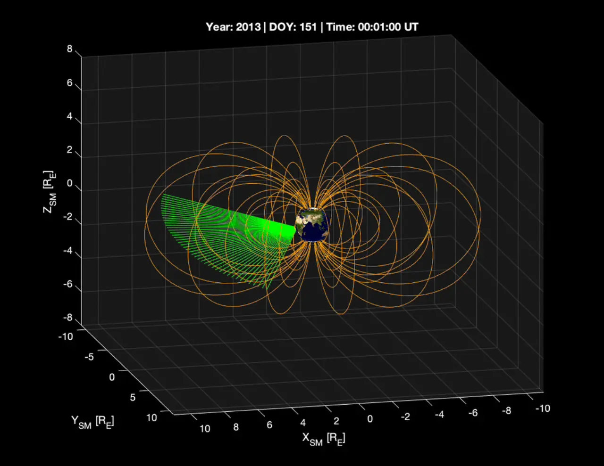

태양폭풍이라는 말을 들으면 사람들은 먼저 거대한 태양 플레어와 오로라를 떠올립니다. 하지만 지구 주변 기술 인프라를 흔드는 과정은 태양에서 출발한 입자가 지구 자기권 안에서 어떻게 쌓이고 빠져나가는지에 달려 있습니다. NASA가 2026년 5월 공개한 STORIE 임무는 바로 이 보이지 않는 흐름을 국제우주정거장 바깥에서 들여다보려는 실험입니다.
STORIE는 Storm Time O+ Ring current Imaging Evolution의 약자입니다. 이름이 길지만 질문은 분명합니다. 태양에서 온 입자와 지구 대기에서 올라온 입자가 지구 둘레의 링 커런트에 얼마나 섞이는지, 태양폭풍 때 그 띠가 얼마나 빠르게 커지고 줄어드는지, 그 변화가 위성과 전력망에 어떤 부담을 남기는지 보려는 임무입니다.
우주 날씨는 먼 우주 이야기가 아닙니다. 강한 지자기 폭풍은 위성 표면에 전하를 쌓이게 하고, 항법 신호를 흐리게 만들며, 대기 상층을 부풀려 저궤도 위성의 저항을 키울 수 있습니다. 지상에서는 유도 전류가 송전망과 배관에 부담을 줄 수 있습니다. 그래서 관측의 핵심은 태양에서 무슨 일이 났는지뿐 아니라, 지구가 그 에너지를 어떻게 받아들이는지입니다.
보이지 않는 전류가 흔드는 것

링 커런트는 지구를 둘러싼 도넛 모양의 입자 띠입니다. 이곳에서는 양전하와 음전하를 가진 입자들이 서로 다른 방향으로 흐르며 전류를 만듭니다. 평소에는 조용해 보이지만 태양풍이 강해지면 입자 수와 에너지가 빠르게 달라질 수 있습니다. 문제는 이 변화가 눈으로 보이지 않는다는 점입니다. 일반 카메라로 찍을 수 없고, 한 지점의 측정만으로 전체 모양을 알기도 어렵습니다.
NASA가 STORIE에 기대하는 이유는 이 띠의 변화를 안쪽에서 바깥쪽으로 보려는 시도에 있습니다. 과거에도 링 커런트를 살펴본 임무가 있었지만, 지구를 가운데 둔 위쪽 시야에서는 지구에서 반사되는 빛과 관측 각도 때문에 가까운 적도 부근의 입자 흐름을 세밀하게 보기 어려웠습니다. 국제우주정거장에 설치된 STORIE는 지구를 등지고 바깥을 향해 스캔하면서 다른 각도의 자료를 쌓습니다.
이 차이는 예보의 품질과 연결됩니다. 태양폭풍이 같은 세기로 도착해도 지구 주변 입자 띠가 어떻게 반응하느냐에 따라 실제 피해 가능성은 달라집니다. 위성 운영자는 전하 축적과 궤도 저항을 걱정하고, 전력망 운영자는 지자기 유도 전류를 걱정합니다. 보이지 않는 전류의 움직임을 더 잘 알수록 위험 시간을 좁혀 볼 수 있습니다.
왜 우주정거장 바깥인가
STORIE는 국제우주정거장 외부에 설치돼 지구 주변을 도는 동안 링 커런트의 한 조각씩을 관측합니다. 한 번에 전체를 보는 방식은 아니지만, 우주정거장이 지구를 반복해서 돌면서 약 90분 주기의 관측 조각을 이어 붙일 수 있습니다. 이 방식은 폭풍이 시작되고 약해지는 동안 링 커런트가 시간에 따라 어떻게 변하는지 추적하는 데 유리합니다.
우주정거장은 완벽한 과학 전용 궤도는 아니지만, 이미 전력과 통신, 설치 인프라를 갖춘 실험 플랫폼입니다. STORIE 같은 장비가 빠르게 올라가 자료를 만들 수 있는 이유도 여기에 있습니다. 단독 위성을 새로 띄우는 것보다 임무 규모를 줄이면서도 특정 질문에 집중할 수 있습니다. 과학 임무의 가치는 장비가 얼마나 크냐보다 어떤 빈틈을 메우는지에서 나옵니다.
다만 우주정거장 기반 관측에는 제약도 있습니다. 궤도와 시야가 고정된 만큼 모든 방향을 원하는 대로 볼 수는 없습니다. 그래서 STORIE의 결과는 다른 태양 관측, 자기권 관측, 지상 자력계 자료와 함께 읽어야 합니다. 중요한 것은 단일 장비가 모든 답을 주는 것이 아니라, 그동안 비어 있던 각도와 시간 간격을 보태는 일입니다.
산소 이온이 가리키는 출처
STORIE가 특히 주목하는 단서는 산소 이온입니다. NASA 설명에 따르면 링 커런트 입자가 지구 대기에서 온 것인지, 태양풍에서 온 것인지 구분하려면 입자의 성분을 봐야 합니다. 산소 신호가 강하면 지구 대기권에서 올라온 입자의 기여가 크다는 뜻일 수 있습니다. 태양폭풍 때 지구 자체가 얼마나 입자를 공급하는지 알면, 링 커런트가 커지는 원인을 더 구체적으로 나눌 수 있습니다.
이 관측은 직접 입자를 붙잡아 세는 방식만이 아닙니다. 전하를 띤 입자가 지구 외기권의 중성 원자와 전하를 주고받으면 중성 입자로 바뀌어 자기장에 묶이지 않고 날아갈 수 있습니다. STORIE는 이런 에너지 중성 원자를 감지해 원래 갇혀 있던 입자들의 방향과 속도를 추정하려 합니다. 눈에 보이지 않는 입자 띠를 간접적으로 그리는 셈입니다.
과학적으로는 이 대목이 흥미롭습니다. 겉으로는 하나의 태양폭풍처럼 보여도, 링 커런트가 만들어지는 재료와 속도는 매번 다를 수 있습니다. 어느 때는 태양풍의 공급이 강하고, 어느 때는 지구 대기에서 올라온 산소가 더 중요할 수 있습니다. 같은 폭풍이라는 이름 뒤에 다른 조합이 숨어 있다면, 예보 모델도 그 차이를 반영해야 합니다.
예보는 피해 시간을 줄입니다
우주 날씨 예보의 목표는 공포를 키우는 것이 아닙니다. 위성 운영자가 안전 모드 전환 시간을 잡고, 항공과 통신 운영자가 교란 가능성을 확인하며, 전력망 운영자가 취약한 구간을 미리 살피게 하는 데 있습니다. 큰 폭풍은 드물지만, 한 번의 강한 교란은 많은 시스템을 동시에 건드립니다. 정확한 예보는 피해를 없애기보다 대응 시간을 벌어 줍니다.
STORIE의 관측 기간은 약 6개월로 계획돼 있습니다. 짧아 보일 수 있지만, 태양 활동이 강한 시기에 폭풍 전후 변화를 비교할 수 있다면 의미 있는 자료가 쌓입니다. 특히 링 커런트가 조용한 시기와 폭풍 시기에 얼마나 다르게 움직이는지 확인하면 모델의 가정이 더 단단해집니다. 우주 날씨 연구는 화려한 사진보다 반복 관측의 축적이 중요합니다.
독자가 이 뉴스를 볼 때 확인할 기준은 세 가지입니다. STORIE가 실제로 어떤 폭풍 사례를 관측했는지, 산소 이온과 태양풍 기여를 얼마나 구분했는지, 그 결과가 위성·전력망 예보 모델에 어떻게 반영되는지입니다. 발사와 설치 소식은 시작일 뿐입니다. 과학의 가치는 장비가 우주에 도착한 뒤, 보이지 않던 위험을 얼마나 더 선명한 시간표로 바꾸는지에서 확인됩니다.
관련 영상
NASA Experiment to Track Space ‘Doughnut’ Encircling Earth
태양폭풍을 더 잘 본다는 말은 결국 지구 주변의 약한 신호를 더 잘 읽는다는 뜻입니다. STORIE가 그려낼 링 커런트 지도는 눈에 보이지 않는 우주 날씨의 중간 과정을 보여 줄 수 있습니다. 그 과정이 선명해질수록 우주 기술을 쓰는 사회는 더 차분하게 대비할 수 있습니다.